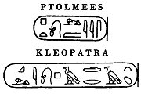

Mapa starověkého Egypta

Tutanchamonův sarkofág
|
EGYPT
Stačí přeletět Středozemní moře a rázem se ocitnete v Egyptě – zemi s tisíciletou tradicí. Vždyť nejstarší písemné památky nalezené na jeho území pocházejí už z 4. tisíciletí př.n.l.! Sláva této starověké říše trvala s krátkými přestávkami až do doby, kdy Egypt dobyli Arabové (641 n.l.) a později Turci (1517). Pro Evropany ale zůstával Egypt až do 19. století tajemnou zemí kdesi za mořem. O jeho „znovuobjevení" se zasloužil až slavný vojevůdce Napoleon Bonaparte, který sem vtrhl se svými vojáky v roce 1798. Kresby pyramid obletěly celý svět a do Egypta dorazili první vědci. Vykopávky odhalily nejen další pyramidy, ale také egyptské chrámy, pohřebiště a hlavně spoustu nápisů a textů, které neuměl nikdo číst. Teprve po jejich rozluštění se ukázalo, že starověcí Egypťané byli nejen výbornými staviteli, ale také literáty. Psali básně, povídky, bajky, pohádky, životopisy, naučnou literaturu atd. Nejvýznamnější jsou ale texty náboženské.

Memnónovy kolosy
|
Historie
Na březích africké řeky Nil vznikla jedna z nejstarších starověkých civilizací. Podle tradice první faraon Meni sjednotil kolem roku 3000 př.n.l. Horní a Dolní Egypt a stal se tak vládcem obrovské říše. Dějiny starověkého Egypta většinou dělíme na Starou říši (2778-2263 př.n.l.), Střední říši (1991-1786 př.n.l.) a Novou říši (1580-1085 př.n.l.).

Sfinga
Kdo byl Memnón?
|
Texty pyramid a rakví
Knihám mrtvých (Nová říše) předcházely jednotlivé texty rakví (Střední říše) a texty pyramid (Stará říše).

Džóserova pyramida v Sakkáře
Cheopsova pyramida v Gíze
|
Posmrtný život
Pro egyptské náboženství je typická víra v posmrtný život. Nemůžeme se tedy divit, že ústředním bodem, ze kterého vycházela egyptská kultura, byla právě smrt. Pyramidy jsou obrovské hrobky egyptských panovníků, složitý postup mumifikace sloužil k tomu, aby těla zemřelých vydržela co nejdéle, to ale nebylo všechno. Pohřební výbavu zemřelého tvořily nejen předměty, které mohl po smrti potřebovat, ale také různá magická zaříkadla a návody, které mu měly usnadnit cestu podsvětím. Ta byla totiž plná nástrah a bez tzv. knih mrtvých by duše zemřelého nikdy nedosáhla věčnosti.
Říkadlo pro vybídnutí vešebta, aby pracoval za člověka v říši duchů.
N. praví: „Ó vešebte, patřící mně! Až budu určen a zavolán, abych konal práce, které jsou konány mužem v říši duchů podle jeho povinnosti: odklizování nečistoty, vzdělávání pole, zavodňování břehů, převážení východního písku na západ, přihlas se za mne, řka: „Zde jsem!"
Dodatek: Poslouchej jen toho, kdo tě vytvořil, neposlouchej jeho nepřítele!
|
Znáš i jiná zaříkadla? K čemu slouží? Fungují?
|
Vešebti
V hrobkách mizelo obrovské jmění. Důkazem je pohřební výbava nepříliš významného faraona Tutanchamona. V jeho hrobce, která unikla pozornosti vykradačů, byly nalezeny stovky zlatých předmětů. Mezi jinými i sošky vešebtů. Vešebti byli sluhové, kteří měli po „oživení" speciálním zaklínadlem za mrtvého pracovat v onom světě. Zámožní lidé si jich mohli dovolit více, tedy třeba na každý den jednoho. Aby se vešebti mezi sebou nehádali, kdy má který pracovat, mělo každých deset sošek svého nadřízeného. Ovšem i ty měly své šéfy a navíc si musely někdy odpočinout, proto počet vešebtů neustále narůstal… Kdo neměl vešebta žádného, musel pracovat i po smrti!
|
Kniha mrtvých

Ilustrace z Knihy mrtvých znázorňuje Síň obou pravd. |
Kniha mrtvých
Během vlády XXVI. dynastie (663-525 př.n.l.) se ustálila závazná podoba tzv. Knihy mrtvých (Kniha o zjevování se na světle denním). Šlo vlastně o rozsáhlou sbírku starších zaříkadel a rad známých už z textů pyramid a rakví. Kniha mrtvých se přikládala k mumii nebo se vkládala do zvláštní schránky, byla zapsána na papyrovém svitku a obvykle bývala bohatě ilustrována. Duše zemřelého zde vystupuje jako srdce N-ovo nebo N. Mrtvý musel projít mnoha nástrahami a použít různá zaříkadla (na oživení vešebtů, aby měl vodu a vzduch, aby se mu otevřely správné dveře atd.). Nakonec dorazil do síně obou pravd, kde bůh podsvětí Usirev (Osiris) položil na jednu misku vah jeho srdce a na druhou peříčko. Pokud bylo srdce lehčí (nezatížené hříchy), byl mrtvý prohlášen za spravedlivého a mohl zamířit do obdoby křesťanského ráje. V opačném případě skončil v jakémsi pekle, kde musel jíst výkaly a pít moč… |
 |
Kniha mrtvých |
|
Přečti si ukázky z Knihy mrtvých a nakresli k nim vlastní ilustrace.
Kteří bohové v ukázkách vystupují? Co o nich viš?
|
Vlastní životopis Sinuhetův
Mika Waltari
|
Vlastní životopis Sinuhetův (1950 př.n.l.)
Sinuhet byl významný královský úředník a správce harému. Náhodou se doslechl o vraždě faraona, na níž se podílel i harém, a přestože se na zavraždění panovníka nepodílel, raději uprchl z Egypta. Dostává se až do Sýrie, kde se proslaví jako vojevůdce a ožení se s dcerou místního knížete. Stále ale touží po návratu do rodného Egypta, kde chce být podle všech pravidel pohřben. Naštěstí se nový faraon dozví o Sinuhetových zásluhách, a protože byl nevinný, může se vrátit zpět do Egypta, kde se znovu stane váženým člověkem.
|
Jméno Sinuhet proslavil finský spisovatel Mika Waltari (1908-1979), který napsal historický román Egypťan Sinuhet. S původní egyptskou skladbou má však společného velmi málo. Sinuhet zde není úředník, ale lékař a jeho dobrodružství na cestách jsou mnohem zajímavější. Také z hlediska historické věrnosti se dá tomuto románu leccos vytknout, ale spisovatel není vědec a tento skvěle napsaný román určitě stojí za přečtení!
Srovnej Waltariho román s egyptským textem.
Znáš i jiná Waltariho díla?
|
Tento hieroglyf zobrazuje písařské náčiní a zároveň označuje slovo psát. |
Jazyk a písmo
Ve vývoji egyptského písma rozlišujeme tři hlavní fáze – hieroglyfy, hieratické a démotické písmo. Hieroglyfy (řecky „posvátná tesaná písmena“) sloužily jako písmo reprezentativní, a proto zdobí zdi chrámů, sochy atd. Jejich zjednodušením vzniklo písmo hieratické (řecky „kněžské“). Tím se psalo především na papyrus (pomocí štětce). Démotické písmo (řecky „lidové“) původně sloužilo hlavně k hospodářským záznamům a psalo se jím např. na střepy z hliněných nádob. Nejstarší hieroglyfický nápis pochází z roku 3100 př.n.l. Poslední démotický nápis je z roku 450 n.l. a byl objeven na ostrově Fílé nedaleko Asuánu.
Hieroglyfy ani další egyptská písma rozhodně nebyly miniaturní ilustrace (zobrazený předmět = význam znaku). To by je mohl číst každý! Šlo o důmyslný systém znaků, z nichž část skutečně znamenala to, co zobrazovala, další znaky ale označovaly jednotlivé souhlásky nebo jejich skupiny, jiné gramatické tvary (např. množné číslo) a další byly pouze pomocné. Speciální znaky měly i číslice.
|
Bůh Thovt má hlavu ptáka ibise a v ruce drží písařské náčiní, protože je považován za mytického stvořitele hieroglyfů. Je bohem písma, tajemství a Měsíce.
|

Rosettská deska (nalezena 1799) obsahuje stejný text psaný třemi druhy písma – hieroglyfy, démotickým písmem a řeckou alfabetou. Text je poděkováním kněží z Memfidy faraonovi Ptolemaiovi V. za poskytnuté dobrodiní (196 př.n.l.). K vidění je v Britském muzeu v Londýně.
|
Rozluštění hieroglyfů
 Francouzský egyptolog Jean-François Champollion [žan fransoa šampoljon] publikoval v roce 1824 svou práci Nástin hieroglyfického systému starých Egypťanů, která znamenala zlom v rozluštění egyptských hieroglyfů. S pomocí rosettské desky a dalších textů objevil základní zákonitosti tohoto starověkého písma – psalo se zprava doleva, zaznamenávaly se pouze souhlásky a rozluštil hlavní znaky. Francouzský egyptolog Jean-François Champollion [žan fransoa šampoljon] publikoval v roce 1824 svou práci Nástin hieroglyfického systému starých Egypťanů, která znamenala zlom v rozluštění egyptských hieroglyfů. S pomocí rosettské desky a dalších textů objevil základní zákonitosti tohoto starověkého písma – psalo se zprava doleva, zaznamenávaly se pouze souhlásky a rozluštil hlavní znaky.
Champollion byl vynikající lingvista a uvědomil si, že egyptská slova se podobají koptštině. Tento jazyk používali hlavně egyptští křesťané, kteří své texty zaznamenávali řeckou abecedou doplněnou o šest démotických znaků. Řecká abeceda už měla speciální znaky pro samohlásky, a proto se můžeme domýšlet, jak se egyptská slova vyslovovala. Bohužel to nebudeme moci nikdy ověřit...
|

Champollion přišel na to, že kartuše (ovály) označují jména panovníků. Hieroglyfy v nich tedy nezastupují celá slova, ale pouze jednotlivé hlásky. Jako první rozluštil jména faraonů Ptolemaia a Kleopatry.
 Hieroglyfický znak pro život – anch používali Egypťané také jako amulet.
Hieroglyfický znak pro život – anch používali Egypťané také jako amulet.
|

Ukázka hieroglyfického nápisu s fonetickým přepisem a překladem.
Ukázky ze školních úloh písařské školy
Zkus zapsat část ukázky vlastním obrázkovým písmem.
Jak by vypadaly výtržnosti nezvedených žáků dnes? Popiš je.
Egyptský bůh Ré
|
Písaři
Povolání písaře (úředníka) bylo velmi ceněno. Kromě kněží byli písaři jediní gramotní lidé v Egyptě. Těžiště jejich činnosti spočívalo v úředních a účetních záznamech a opisování knih mrtvých. Literární činnost byla velmi okrajová. Psalo se štětcem dvěma barvami (černou a červenou) na papyrové svitky ze speciálně upraveného druhu rákosu. Nejdelší nalezený svitek je dlouhý neuvěřitelných 40,5 metru! Šířka byla asi 47 cm. Studenti se učili napodobováním svých učitelů – nejdříve opisovali školní úlohy, aniž by jim rozuměli, později se učili význam jednotlivých znaků (je doloženo přes 6000 hieroglyfů, ale písaři stačilo ovládnout 1000 asi nejpoužívanějších znaků).
Další díla
Chvalozpěv na Nil
Naučení* vezíra Ptahhotepa
Napomenutí egyptského mudrce
Stížnosti výmluvného venkovana
Rozhovor muže s vlastní duší
Chvála mudrců a knih
Nářek Ésety a Nebthety nad Usírem
Chvalozpěv krále Echnatona* * na Slunce
|

Vápencová socha písaře (asi 2490 př.n.l.) v typickém sedu
Ukázka ze školní úlohy
* Žánr naučení byl velmi oblíbený. Většinou šlo o rady otce svému synovi a nástupci v úřadu nebo na trůně.
* * Echnaton je faraon Achnaton, který prosazoval boha Atona (sluneční kotouč) jako hlavní božstvo Egypta. Po jeho smrti se ale egyptští kněží znovu vrátili k původnímu polyteismu.
|
Internetové stránky
Ancient Egypt, obrázky, informace, bohové...
Art of Egypt, obrázky...
Česká egyptologie
Egypt, cestování, památky, mytologie...
Secrets of the Pharaohs life in the ancient times, výukový web s animacemi
Umění Egypta
Egypten, hieroglyfy
Exkurze
Britské muzeum, Londýn
Louvre, Paříž
National Gallery of Art, New York

Faraon Achnaton s manželkou Nefertiti a dětmi
|
Doporučená četba
Baines, J., Málek, J.: Svět starého Egypta, přel. Pečírková, Prosecký, Knižní klub, Praha 1996
Davies, W.V.: Egyptské hieroglyfy, Čtení v minulosti, přel. H.Vlasová, Volvox globator, Praha 2002
Dávné písně lásky, Milostná lyrika starého Egypta, přel. Vachala, Černík, Československý spisovatel, Praha 1982
Hart, George: Egyptské mýty, přel. I.Šmoldas, NLN, Praha 2001
Lexa, František: Beletristická literatura staroegyptská, J.Šnajdr, Kladno 1923
Lexa, F.: Náboženská literatura staroegyptská (2 díly), Praha 1997
Lexa, F.: Obecné mravní nauky staroegyptské (3 díly), Praha 1926
Lexa, F.: Výbor ze starší literatury egyptské, Praha 1947
Lexa, F.: Výbor z mladší literatury egyptské, Praha 1948
Lexa, F.: Staroegyptské čarodějnictví (2 svazky), Herman & synové, Praha 1923
Vachala, Břetislav: Moudrost starého Egypta, Knižní podnikatelský klub, Praha 1992
Vachala, B.: Pověsti a legendy faraonského Egypta, Knižní podnikatelský klub, Praha 1994
Verner, Miroslav a kol.: Ilustrovaná encyklopedie starého Egypta, Karolinum, Praha 1997
Waltari, Mika: Egypťan Sinuhet, přel. M.Hellmutová, Lidová demokracie, Praha 1965
Zamarovský, Vojtěch: Bohové a králové starého Egypta, Praha 1979
Zamarovský, V.: Jejich veličenstva pyramidy, Praha 1975
Žába, Zbyněk: Tesáno do kamene, psáno na papyrus, Svoboda, Praha 1968
Žába, Z., Kubíčková, V.: Zpěvy Nilu, Výbor z lyriky starého Egypta, Praha 1957
|
Připrav si referát o některé z uvedených knih nebo internetových stránek.

Koptské písmo vycházelo z řecké alfabety a démotického písma.

Rákosová (papyrus) houština
|
|